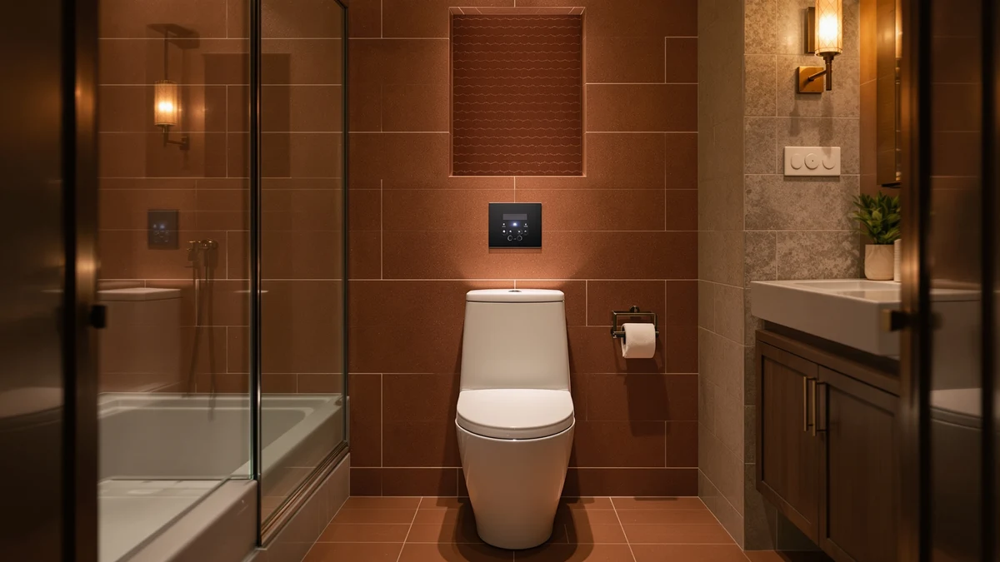

Kohler Transtions Nightlight Review (2026): Worth It?
Prices and picks verified as of November 2026. Independent, reader-supported reviews.


Quick Answer
The Kohler Transtions Nightlight pairs a built-in low-glow light with a toddler insert ring and a Quiet-Close elongated lid, and it lists for $72.20. It makes the most sense for households still in the potty-training years who want one seat to cover both the training phase and the years after, rather than buying a separate toddler ring now and a plain adult seat later.
Our pick: KOHLER Transtions Nightlight Toddler Potty, $72.20 Check Price on Amazon
Bottom line: our top pick is the KOHLER Transtions Nightlight at $72.20.
Things to Know Before You Buy
- It is built for elongated bowls only, so measure your toilet before ordering.
- The ReadyLatch hinge holds the toddler ring in place during training and removes it when you no longer need it.
- Grip-Tight hardware mounts from above the bowl, a detail Kohler highlights for simpler installation than seats with under-bowl bolts.
- Amazon's listing shows no star rating or review count for this ASIN yet, so treat buyer sentiment as unknown rather than assume it is weak.
- At $72.20, this Kohler Transtions Nightlight seat sits above basic adult-only seats but close to other nightlight models from the same brand.
This Kohler Transtions Nightlight review looks at a seat built around a single problem: a toddler who still needs a smaller ring to sit safely, and parents who do not want to fumble for a light switch at 2 a.m. Kohler sells the Transtions Nightlight as an elongated, Quiet-Close seat with a ReadyLatch toddler insert and a low-intensity nightlight molded into the lid, and it currently lists at $72.20 on Amazon.
We compared its listed specs and features against three other seats sold on Amazon in a similar price band: a heated model from SNMUMU, an adjustable raised seat from CareCrew, and a second Kohler elongated seat from the Stonewood line. None of these four products currently show a star rating or review count on their Amazon listings, so this review leans on manufacturer specifications and feature comparisons rather than aggregate buyer scores. Readers weighing a nightlight seat against a heated seat or a raised seat will find the tradeoffs below, along with honest limits on what the Transtions Nightlight does and does not solve.
Toilet seat shopping gets complicated once you move past the basic elongated-versus-round decision, because features like nightlights, heating elements and adjustable risers each target a different household need. A family with a toddler cares about the ReadyLatch ring and the low-glow light far more than a 24-volt heating element, while a senior recovering from hip surgery cares about frame strength and seat height, not a nightlight. This review tries to separate those use cases clearly instead of ranking all four seats on one generic scale.
Why You Should Trust Us
Ilane Tall covers bathroom fixtures for Best Toilet Seats and has written dozens of seat comparisons across nightlight, heated and raised categories on this site. This Kohler Transtions Nightlight review follows the same research process we use across the site: we pull the current Amazon price and listed specs for the featured seat and its closest competitors, read through the manufacturer's stated features, and check what verified buyers say when review data exists. We do not own this seat, run a testing lab, or install products in a home bathroom. We do not run a fake testing lab, and we state that limit plainly instead of implying ownership experience we have not had.
How We Compared
We built this Kohler Transtions Nightlight review on the current Amazon listing for the seat: its price, its stated dimensions, the hardware Kohler describes, and the three product images that accompany the listing. We compared those details against the three alternative seats pulled into this review, matching price range and feature overlap rather than picking the cheapest or most expensive option on the market. Where a manufacturer lists a weight capacity, a voltage figure, or a temperature range, we cite that number directly instead of guessing at performance we have not measured ourselves. None of the four seats in this comparison currently carry a star rating or review count on Amazon, so we did not weight any pick by review volume. If and when verified owner reviews accumulate on this listing, we will fold that data into a future update rather than fabricate sentiment that is not yet there.
Overview & Specs

KOHLER Transtions Nightlight Toddler Potty
What we like
- Built-in nightlight removes the need for a separate plug-in light near the toilet
- ReadyLatch hinge locks and releases the toddler ring without tools
- Grip-Tight hardware installs entirely from above the bowl
- Quiet-Close lid and seat avoid a slamming sound during nighttime visits
Flaws but not dealbreakers
- Fits elongated bowls only, so it will not work on a round-bowl toilet
- No star rating or review count yet on the Amazon listing
- Costs more than a basic adult-only elongated seat without the nightlight or toddler ring
| Material | Plastic / wood |
| Size | Elongated |
The core idea behind the Kohler Transtions Nightlight is combining two seats a growing family would otherwise buy separately: a toddler ring and a standard adult seat. The ReadyLatch hinge is the mechanism that makes that work. It holds the smaller ring in a positive lock during the training years, then releases cleanly when the household is done with it, leaving a standard elongated Quiet-Close seat behind. Kohler's Grip-Tight bumpers keep the seat from shifting once installed, and the company designed the mounting hardware to fasten entirely from above the bowl rather than requiring access underneath.
The nightlight itself is the feature that sets this seat apart from Kohler's plainer elongated models. According to the listing, the light is tuned to a low intensity so it illuminates the bowl at night without the harsh brightness of an overhead bathroom light or a phone flashlight. That matters most for parents managing a toddler's middle-of-the-night bathroom trips, where a sudden bright light can make it harder for a child to fall back asleep. At $72.20, the seat costs more than a bare-bones elongated model, and that premium buys the nightlight, the toddler ring and the ReadyLatch mechanism together rather than as separate purchases.
What We Liked
What stands out most in this Kohler Transtions Nightlight review is how the seat solves two problems with one purchase instead of two. Families typically buy a toddler insert ring as a standalone accessory and then replace it later with a plain seat. Kohler builds both stages into the ReadyLatch hinge, which locks the ring in place and lets it come off cleanly once a child has outgrown it. The Grip-Tight installation hardware is a smaller but useful detail: fastening everything from above the bowl means no one has to reach into the cramped space behind the toilet with a wrench. Pair that with the Quiet-Close lid and seat, and the seat avoids the two most common complaints about budget toilet seats, loose mounting and a loud slam.
What Could Be Better
The biggest limit on this Kohler Transtions Nightlight seat is bowl compatibility: it only fits elongated toilets, so anyone with a round bowl needs a different model entirely. The Amazon listing also shows no star rating or review count at the time of this review, which means buyers cannot yet lean on a large base of verified feedback the way they could with a longer-established seat. And because the nightlight and toddler ring add real engineering to the hinge and lid, the price sits meaningfully above a bare elongated seat with no extra features, a tradeoff worth weighing if a household only needs one of those two functions rather than both.
The listing also does not state how long the nightlight runs on a set of batteries or whether it uses a replaceable battery pack at all, a detail buyers will want from Kohler's support page or the Q&A section on the product listing before they order. Parents who need the light to last years without maintenance should confirm that detail directly rather than assume it from the feature list alone.
Who Is It For?
This Kohler Transtions Nightlight seat fits households actively potty training a toddler, especially ones that also deal with frequent nighttime bathroom visits from kids or adults. Parents who want to skip buying a separate nightlight and a separate toddler ring, then upgrading to a plain adult seat later, get all three stages covered by one purchase here. It is a weaker fit for anyone with a round-bowl toilet, since the seat is elongated only, and for buyers who have no use for a nightlight or toddler ring and would rather save money on a simpler Quiet-Close seat like the Kohler Stonewood covered further down in this review.
A household with multiple bathrooms might also consider pairing this seat with a plainer model elsewhere in the home, using the nightlight version only in the bathroom closest to a child's bedroom. That approach keeps the premium feature where it earns its price instead of paying for it on every toilet in the house.
Alternatives to Consider
If the toddler nightlight combination in this Kohler Transtions Nightlight review is not what your bathroom needs, here are three alternatives in a similar price range that solve different problems.

Best Value
Heated Toilet Seat -Warmer Toilet
Six adjustable temperature settings and 24V low-voltage wiring make this a better pick for anyone prioritizing warmth over a nightlight, and it costs about $6.66 less.
$65.54
Check Price on Amazon
Also Great
Adjustable Width & Height Raised
A reinforced metal frame rated to 450 pounds and seven height settings make this the better choice for seniors or anyone recovering from surgery, with no nightlight involved.
$69.99
Check Price on Amazon
Also Great
KOHLER Stonewood Quiet-Close Elongated Toilet
A two-pack of plain Quiet-Close elongated seats from the same brand, a good fit for households that want Kohler's hinge quality without paying for a nightlight or toddler ring.
$69.96
Check Price on AmazonDoes the Kohler Transtions Nightlight seat fit a standard toilet?
It is built in an elongated shape, so it fits elongated bowls only.
How bright is the Kohler Transtions Nightlight's built-in light, and can you turn it off?
Kohler describes the nightlight as tuned to a low intensity, enough to see the bowl in the dark without flooding the bathroom with light or disrupting your eyes' night vision.
Frequently Asked Questions
Does the Kohler Transtions Nightlight seat fit a standard toilet?
It is built in an elongated shape, so it fits elongated bowls only. Kohler's Grip-Tight hardware mounts from above the bowl, which the listing notes as part of the easier installation design. Measure your bowl shape before you buy, since a round-bowl toilet needs a different seat.
How bright is the Kohler Transtions Nightlight's built-in light, and can you turn it off?
Kohler describes the nightlight as tuned to a low intensity, enough to see the bowl in the dark without flooding the bathroom with light or disrupting your eyes' night vision. The listing does not mention a separate power switch, so treat it as an always-on feature rather than one you toggle on demand.
Is the Kohler Transtions Nightlight a good choice for potty training?
Yes, it is designed around that use case. The ReadyLatch hinge locks a toddler insert ring in place for daily use and releases it when the household no longer needs it, so one seat covers both the training phase and the years after. The Quiet-Close lid also means a parent does not get woken by a slamming seat during overnight bathroom trips.
Final Verdict
This Kohler Transtions Nightlight review comes down to one question: does your household need a toddler ring and a nightlight at the same time? If so, Kohler's combination of the ReadyLatch hinge, Grip-Tight hardware and built-in low-glow light justifies the $72.20 price better than buying separate accessories would. If you only need warmth, a raised seat for mobility, or a plain Quiet-Close seat without the extras, the SNMUMU, CareCrew and Kohler Stonewood alternatives above cover those cases at a similar price point.